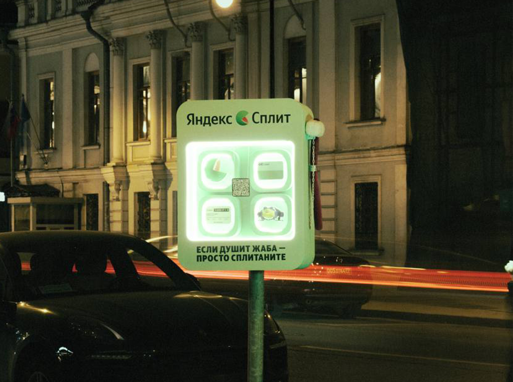
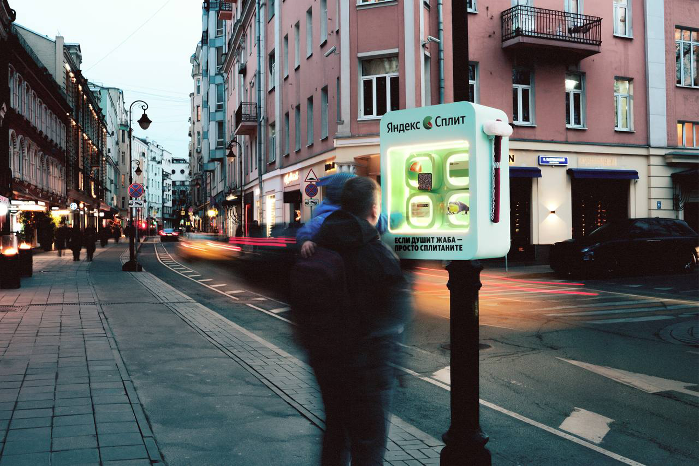

интеграция малых архитектурных форм в городскую среду.
на объекте установлена система сплит-оплаты для быстрой аренды девайсов.

ночной режим работы. световая индикация состояния ячейки
и встроенная навигация для пользователей.
видео процесса работы устройства